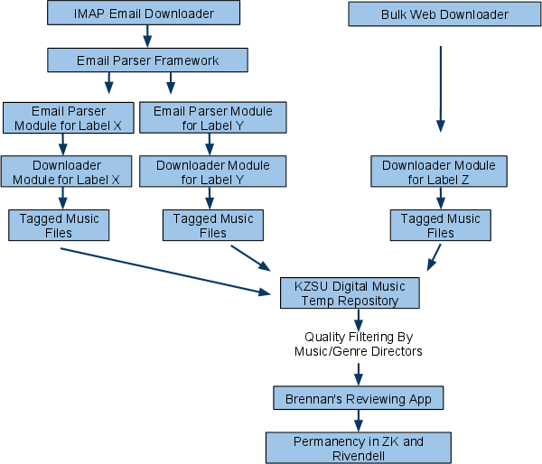

KZSU Music Downloader
Status: Request for comments phase (as of 8/7)
Authors:
Brie Bunge <bbunge@kzsu.stanford.edu>
Truc Nguyen <truc@kzsu.stanford.edu>
Kristen Leach <kwistens@kzsu.stanford.edu>
Reviewed by:
Andrew Widdowson <apw@kzsu.stanford.edu>
Objective
The current process of retrieving music from promoters/labels via email involves manually downloading, burning, and annotating the tracks. Our objective is to automate this process by implementing a system that downloads, sanitizes, and archives the tracks in an organized file structure on disk. The filesystem will be organized into subdirectories and filenames that are to be determined based on the requirements of the Music Review project.
Background
A lot of time, effort, and resources are wasted to manually complete this process. The time and effort spent on the repetitive task of preparing the music could be used to listen and review the music and the money spent on CDRs and labels could be used elsewhere.
Over the past few years, the music industry has moved overwhelmingly to digital, e-mail and internet distribution, at times to the exclusion of hard copy distribution. Hard copy distribution is slow, expensive, and wasteful -- as it relies on the USPS and consumes loads of material, much of which is ultimately thrown away (especially if a CD is not accepted into a station's rotation). Many labels (including awesome/major ones like Thrill Jockey, as well as the majority of smaller local labels that lack the fund$ to send their stuff to every college radio station in the nation) have actually stopped sending hard copy music altogether, and the only way to access these labels' records is via digital download.
When I (Trent) was originally brought on board with the music department to deal with the dual tasks of checking the music@kzsu e-mail address and downloading digital files for A-File consideration, I very quickly ascertained that manually checking these e-mails, downloading files, "music-directing" (ie, making the keep or crap call), and burning MP3s to disk was, quite frankly, a complete and total pain in the ass. The time involved in this process made it virtually impossible to keep up with the flow of new digital music -- and I soon abandoned any hope of giving digital submissions equal attention (really an "equal chance") as hard copy submissions. In practice, I have only been able to single out digital submissions I already know I want to add, and then download and burn those for the A-File. This is really NOT in the spirit of what the music department is built for -- that is, listening to and screening ALL incoming music, not just artists and albums that have been hyped to the point of name recognition.
An e-mail crawler, or automated music downloader, would save us bundles of energy and time that could and should be used to actually listen to and screen new digital music. In short, many labels and promoters send us predictably-styled e-mails with full album downloads either embedded or linked to in the body of the e-mail. These e-mails look, to my eyes anyway, to be incredibly parseable -- automating the system of opening, passwording, and downloading music sent to us this way would hugely cut down on the time required to deal with e-mail and digital downloads in general. It is my hope that in the near future, most of the e-mail the music department checks manually will be from individual senders, not promoters or mass e-mailers or anyone whose content we can reasonably predict or get a robot to open for us.
Personal Statement from Co-Music Director
Trent Maverick
Overview
Ways in which music labels automate the process of distributing music and how we can automate the process of retrieving it:
-
Music labels often generate emails automatically that they send out to radio stations. Because these emails are computer-generated, they almost always have the same layout and structure in each mailing; just the artist and album information changes.
-
Because we know the layout, we are able to parse out the relevant music tagging information as well as download the tracks.
-
We would use special parsing methods tailored to each music label's email structure.
-
Other music labels have many songs stored on their site and send out monthly reminders to go back to their site and download songs.
-
In this case our system will periodically pretend to be a user, log in to the web site, and download the available songs and tag them.
After the data is aggregated, the system sanitizes the tracks with appropriate metadata. Then, they are stored on disk in a structured file system for later review.
Existing Resources, Standards, APIs
-
IMAP4 lib
-
ConfigParser
-
optparse
Detailed Design

Project Information
Team: Brie Bunge, Truc Nguyen, Kristen Leach
The code is located in Subversion at this address:
UI / Mocks
Command line output is forthcoming. There is no official GUI for this application.
Testing Plan
We will use test-driven development to write each module. When testing each module, we will used cached examples of web pages from the provider in order to not overload the provider servers, essentially stubbing out the behavior of the provider's web site. Thus, the code won't be run "for real" outside of the test environment until it passes tests, and ideally then the code won't be run against the real site until it is "correct" in the control environment. We will use unit testing to test each function separately with dummy data so we can isolate where bugs occur and employ incremental tests. All tests will run locally and function without any network connectivity.
Caveats
It'd be nice if the music labels would just send a nicely formatted zip attachment with the files correctly tagged, but the labels want to collect statistics on click throughs and downloads. As a result, the process is more complicated for the user - who has to click through screens, enter passwords, and such. This expectation poses a challenge for our system in the sense that it has to retain the facade of a typical user. Therefore, we have to inject randomness into the system and throttle the hit rate against a label's site, so that our system appears more like a human. This way, the music labels don't start to question why our station so efficiently downloads their music minutes after every email is sent. :)
Work Estimates
At full-time (40 hrs/week), I would estimate that this project would take ~150 lady hours. A reasonable amount of time to devote to this project per week would be 10-20 hours over the summer, scaled back to 5-10 over the academic year. Optimistically, the framework would be done over the summer.
Launch Plans
Our project will be maintained locally between our filesystems using an SVN repository and launch it on the KZSU servers after testing. We will use a release branch located in the project folder that will contain the latest stable version. We will use the trunk branch for development.
We will present a preliminary proposal to KZSU Music Department Heads and Genre Directors and ask them what kind of functionality, features and interface design they would like within reason. We will provide a readme file to end-users detailing how to use the system, and perhaps a screencaptured video tutorial (so we can show them visually how to use it but do not have to repeat multiple sessions with different people).
Future Directions
-
Implement a progress report system that charts the number of:
-
Raw emails sent to us from music labels
-
Successful processes by the system
-
Unsuccessful processes by the system
-
Emails that have to be manually processed